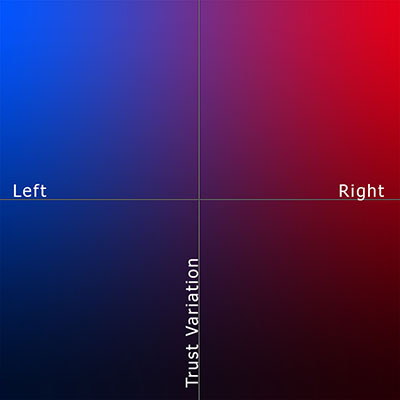

Confirmation Bias Mitigation
Settings:
On/ Off:
Intensity:
Your top news sites:
No data collected yet...
News sites you might disagree with:
No data collected yet...

More about confirmation bias on
wikipedia.org
.
This is an open source project created by Alex Nathanson. Full project details and notes on my methodology are available on
Git hub
. Collaborators welcome.